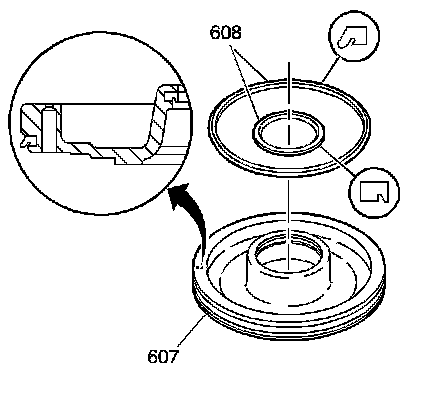
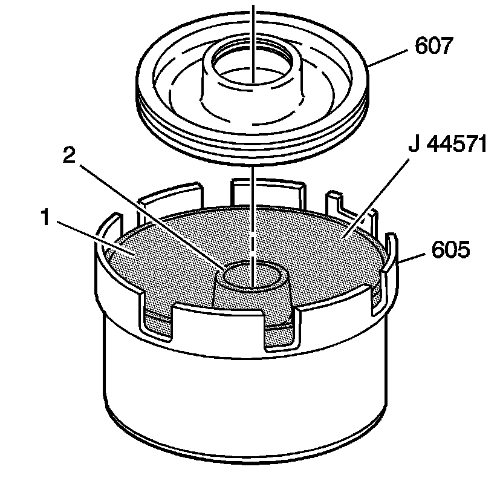
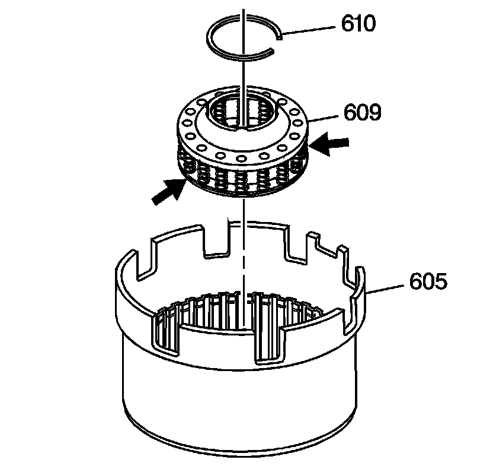
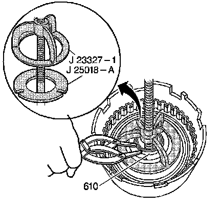
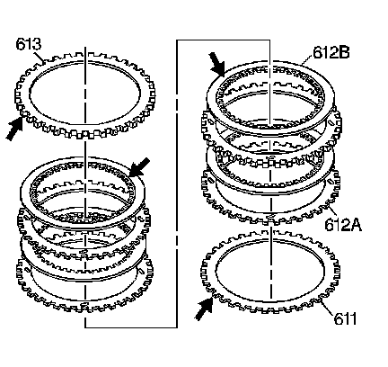
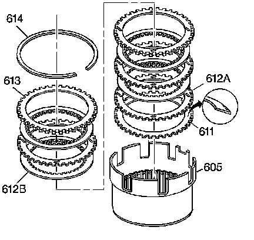

Reverse Input Clutch Assemble
Reverse Input Clutch Assemble
Tools Required
^ J 23327-1 Forward Clutch Spring Compressor (Bridge)
^ J 25018-A Clutch Spring Compressor Adapter
^ J 44571-1 Reverse Input Clutch Piston Installer

1. Inspect the reverse input clutch piston (607) for the following:
^ Damaged or porosity
^ Ring groove damage
2. Install the reverse input clutch inner and outer seals (608) on the piston.

3. Install the J 44571-1 inner (2) and outer (1) reverse input clutch piston installer.
4. Install the piston (607 into the housing (605).
5. Remove the J 44571-1.

6. Inspect the reverse input clutch spring assembly (609) for bent, broken, distorted or damaged springs.
7. Install the reverse input clutch spring assembly (609).

8. Install the J 23327-1 and the J 25018-A.
9. Install the reverse input clutch spring retainer ring (610).

10. Inspect the belleville plate (611), the fiber plate assemblies (612B), the steel turbulator plates (612A) and the selective backing plate (613) for the following items:
^ Damaged tangs
^ Delamination
^ Excessive wear
^ Heat damage or wear
^ Surface finish
^ Flatness

11. Install the reverse input clutch belleville plate (611), with the inner diameter up, into the reverse input clutch housing and drum assembly (605).
12. Install the reverse input clutch plates starting with a steel turbulator plate (612A) and alternate with a fiber plate assembly (612B).
13. Install the reverse input clutch selective backing plate (613).
14. Install the reverse input clutch retaining ring (614).